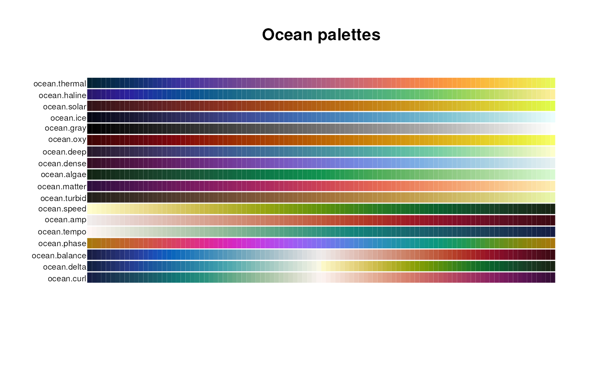

These palettes have been designed to be a collection of perceptually uniform colormaps designed for oceanographic data display.
ocean.algae(n)
ocean.deep(n)
ocean.dense(n)
ocean.gray(n)
ocean.haline(n)
ocean.ice(n)
ocean.matter(n)
ocean.oxy(n)
ocean.phase(n)
ocean.solar(n)
ocean.thermal(n)
ocean.turbid(n)
ocean.balance(n)
ocean.curl(n)
ocean.delta(n)
ocean.amp(n)
ocean.speed(n)
ocean.tempo(n)Number of colors
None
The 'oxy' palette does not include gray as shown in Thyng (2016).
The 'balance', 'delta', and 'curl' palettes were originally given as 2*256 colors (256 each for the left and right half of the palette) and have been downsampled to 256 colors.
The palettes from matplotlib have been converted from RGB codes to hexadecimal strings for use in this package.
Thyng, K.M., C.A. Greene, R.D. Hetland, H.M. Zimmerle, and S.F. DiMarco (2016). True colors of oceanography: Guidelines for effective and accurate colormap selection. Oceanography, 29(3):9-13, http://dx.doi.org/10.5670/oceanog.2016.66.
pal.bands(ocean.thermal, ocean.haline, ocean.solar, ocean.ice, ocean.gray,
ocean.oxy, ocean.deep, ocean.dense, ocean.algae, ocean.matter,
ocean.turbid, ocean.speed, ocean.amp, ocean.tempo, ocean.phase,
ocean.balance, ocean.delta, ocean.curl, main="Ocean palettes")

if (FALSE) {
pal.test(ocean.thermal)
pal.test(ocean.haline) # better than parula!
pal.test(ocean.solar)
pal.test(ocean.ice)
pal.test(ocean.gray)
pal.test(ocean.oxy)
pal.test(ocean.deep)
pal.test(ocean.dense)
pal.test(ocean.algae)
pal.test(ocean.matter)
pal.test(ocean.turbid)
pal.test(ocean.speed)
pal.test(ocean.amp)
pal.test(ocean.tempo)
pal.test(ocean.phase)
pal.test(ocean.balance)
pal.test(ocean.delta)
pal.test(ocean.curl)
}